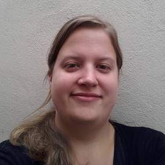
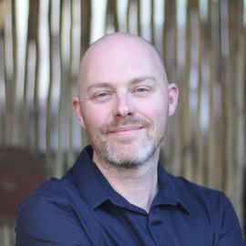

🐶❤ The Empathy Labradors
Nicola du Toit
Nicola du Toit is a UX designer, user research specialist and a musician. She has a Bachelor of Music and a Masters in IT, specialising in Human-Computer Interaction.
As a UX designer Nicola’s career includes educational technology, open source and traditional publishing, front-end development, project management, UX training and e-commerce experience. She is a published author and has spoken and presented workshops at the UX South Africa conference and Wordcamp Cape Town. She strongly believes that human-centred, inclusive design makes the world a better place.
When she’s not drawing wireframes and grumbling about bad UX on Twitter, Nicola plays cello with the Night Light Collective, and co-curates the Betwixt live music series.
Steve Barnett
Steve Barnett works as Front-end developer and User Experience consultant. He loves applying User-Centered Design principles to Front-end development. He likes helping people learn new things and being involved with the local dev community.
He loves sharing what he learns, so he writes about it, speaks at conferences, and facilitates workshops. If he’s not busy with one of those, he’s probably crouched in an awkward position in front of something funny-looking, taking pictures of it.
Sometimes he writes things about himself in the third person and it feels a bit odd ¯\_(ツ)_/¯.